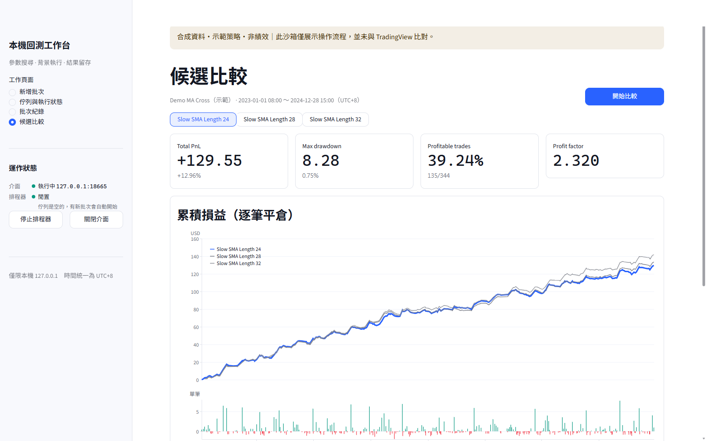

Local-Backtest ／ 本機回測工作台・自用
在自己電腦批次回測，每支策略都先和 TradingView 逐筆核對過
PythonStreamlitTradingView 對照
5 支通過逐筆驗證的策略
逐筆比對進出場時間、方向、出場原因
背景執行關掉介面也會繼續跑
遇到的問題
我原本靠 TradingView 跑大量參數組合，平台一卡住或批次中斷，整個篩選就停下來。我需要能在自己電腦上跑，而且要證明結果和 TradingView 一樣。
原本 vs 現在
原本
- 只能靠 TradingView 批次，中斷就停
- 只有一份結果，沒有東西可以對照
現在
- 在本機排進佇列，背景依序執行，中斷可以續跑
- 新策略先和 TradingView 逐筆比對，通過才能用
分工
我負責訂出要解決的問題、驗收標準和比對規則，看差異證據後做決定。
AI Agent 負責寫程式、照規則翻譯策略、整理比對證據。
還沒解決的事
每月更新行情資料的流程還沒實測。回測結束時如果還有沒平倉的交易，部分統計會不對；目前先確認期末沒有未平倉，工具本身還沒修。
更多細節：為什麼不用自動轉換、展示資料怎麼來
逐行翻譯：策略不用自動轉換工具，照固定流程逐行翻譯，再用 TradingView 匯出的 K 棒和交易清單驗證。原因沒查清楚的差異交給我判斷，不調參數湊數字。結果輸出成 CSV，直接接到我的參數篩選流程。
展示資料：右側是工具的實際畫面，在隔離的副本裡執行：合成 K 棒加一支公開的雙均線示範策略，不是我的策略。畫面數字只是示範，不是績效，也沒有和 TradingView 比對。
界線：只在 Windows 本機執行，不在雲端回測，也不下單。

